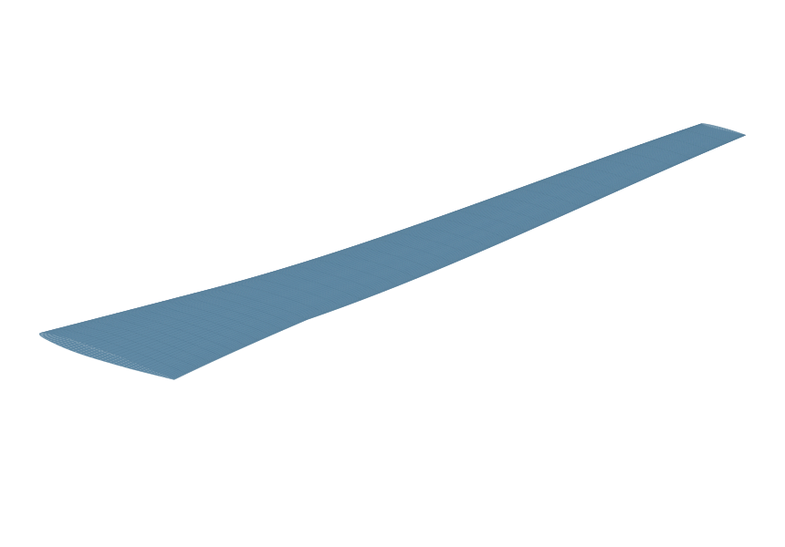

Propose a wing
Methods propose wings in a 38-dimensional design space, optionally screening candidates with the surrogate.
AI agents & aerodynamic design
Benchmarking how AI agents search for better designs.
A benchmark for AI agents and numerical optimizers designing transonic wings with learned predictions and computational fluid dynamics (CFD).
Preprint · November 2026

Recorded geometry · Drag to rotate
The engineering problem
A wing produces lift, which supports an aircraft, and drag, which resists its motion. The lift-to-drag ratio, L/D, measures aerodynamic efficiency: higher values mean more lift for the same drag. Each task fixes a target lift coefficient, CL, a dimensionless measure of lift.
In WingBench, a wing is a three-dimensional shape defined by 38 design variables. Those numbers control the overall outline, how the wing bends and twists along its span, and the shape and thickness of its cross-sections. This parameterization comes from SuperWing (Yang et al., 2026), the dataset we use throughout the benchmark.
We test each wing at Mach 0.7853, 0.8195, and 0.8530, close to the speed of sound. Its score is the geometric mean of L/D across these three conditions.
A learned surrogate can estimate performance in about a second. Its predictions can be too optimistic, especially for shapes unlike its training data. Optimizing the prediction alone can therefore select a wing that performs poorly in CFD.
Computational fluid dynamics (CFD) solves the flow equations on a mesh: a numerical grid around the wing. Evaluating one candidate can take hours. The automatic mesher may fail to build an acceptable grid, or the flow solver may not converge within its time limit, leaving no usable score.
A method needs to choose its expensive tests carefully and recover when a test returns no score. WingBench records those failures as part of the search.
Searching with simulation
Each optimization run is an episode: a sequence of wing proposals and CFD feedback within a fixed query budget.
The benchmark combines AeroTransformer predictions (Yang et al., 2026) with CFD evaluations. A method receives a score or a recorded failure type and can use that feedback in subsequent proposals.
At checkpoints after a set number of CFD queries, the method recommends a wing for separate grading. We report the fraction that receive a valid score and the mean lift-to-drag ratio (L/D) among those valid designs.
The meshing, solver, and grading rules are fixed.
Methods propose wings in a 38-dimensional design space, optionally screening candidates with the surrogate.
A score requires accepted flow results at all three Mach conditions. Failed evaluations return a reason code.
The method selects a wing at each checkpoint. It receives no additional feedback from recommendation grading.
Up to 4,096 surrogate evaluations and 32 online CFD queries per episode. The controlled agent comparison uses a common four-query checkpoint.
Explore the evidence
Three CMA-ES variants, differential evolution, and SMAC3 Bayesian optimization. Compare recommendation validity and mean L/D as the CFD query budget increases.
Mean lift-to-drag ratio
Online CFD queries
At 4 CFD queries
Mean L/D includes valid recommendations only.
Select a load condition, metric, or query budget to inspect the recorded results.
| CFD queries | Method | Valid runs | Mean L/D |
|---|
The four surrogate-assisted baselines share 62 prior CFD records and a 4,096-evaluation surrogate allowance. SMAC3 is the CFD-only reference. These are comparisons of complete search methods, with different uses of feedback and surrogate evaluations. The plotted means do not include uncertainty intervals.
Structure the search
Three agent configurations share the same model, tools, and query caps. The study tests whether explicit reflection or planning improves on open-ended research.
The agent chooses what to analyze and which experiment to run next.
The agent writes a reflection after each CFD result and receives it before the next decision.
Four planners propose two-step procedures. A common scoring rule selects a plan, and the agent replans after the next CFD result.
Mean lift-to-drag ratio
Online CFD queries
At 4 CFD queries
Mean L/D includes valid recommendations only.
Select a load condition, metric, or query budget to inspect the recorded results.
| CFD queries | Method | Valid runs | Mean L/D |
|---|
This plot uses the common four-query comparison: ten runs per configuration and task. Model usage is not equalized, and the means do not include uncertainty intervals. See the paper for the tested implementations and their limitations.
At four CFD queries, neither the tested reflection nor planning implementation consistently improved both recommendation validity and mean L/D over open-ended research across the three tasks.
Read the comparison and its limitationsOpen research
The release includes the benchmark, baseline implementations, agent prompts, and analysis scripts.
Methods, results, and limitations.
arXiv:2611.28418The runner and interfaces for adding new methods.
Available on GitHubRecorded evaluations and recommendation scores.
6,629 CFD evaluation recordsRun your own optimizer or agent and compare it with the released results. The getting-started guide includes the method interface, a worked example, and instructions for running and scoring an experiment.
@article{yang2026wingbench,
title = {WingBench: Benchmarking How AI Agents Search for Better Designs},
author = {Yang, Yiming and Xia, David and Li, Jisen and Jian, Yuqing
and Yang, Yunjia and Aydin, Koray and Wang, Zhaoran},
journal = {arXiv preprint arXiv:2611.28418},
year = {2026},
url = {https://arxiv.org/abs/2611.28418}
}